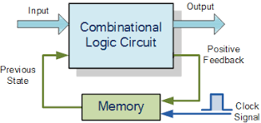
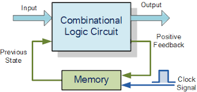

Combinatorial Circuits
Combinatorial circuits are a type of digital circuit that performs a specific Boolean function, such as AND, OR, and NOT, on a set of input signals and generates one or more output signals based on the input signals. They are called "combinatorial" because the output is a function of the current input values, as opposed to sequential circuits where the output is dependent on the current input as well as the previous state of the circuit.
A combinatorial circuit is made up of logic gates that are interconnected to perform a specific Boolean function. The logic gates can be connected in series or parallel to form different types of combinatorial circuits. For example, a series connection of AND gates will perform a logical AND function on all input signals, while a parallel connection of OR gates will perform a logical OR function on all input signals.
Combinatorial circuits are widely used in digital systems to perform a variety of functions such as data processing, signal processing, and control systems. They can be found in many applications such as adders, decoders, multiplexers, and comparators.
The design of combinatorial circuits is an important aspect in digital system design. The process of designing a combinatorial circuit starts with the specification of the required Boolean function, and then the use of Boolean algebra and logical minimization techniques such as K-map to simplify the Boolean function. Once the simplified Boolean function is obtained, the logic gates are chosen and connected to implement the function.
Combinatorial circuits are relatively simple compared to sequential circuits, but they are essential building blocks for many digital systems. They provide the basic logical operations that are used to process and control information in digital systems.
Sequential Switching Circuits
In computer organization, sequential switching circuits, also known as sequential logic circuits, are digital circuits that have the ability to store and remember the previous state of the circuit. They are called "sequential" because the output depends not only on the current input values, but also on the previous state of the circuit.
Sequential circuits are made up of combinatorial logic circuits and memory elements such as flip-flops. Flip-flops are devices that can store a single bit of information and are used to store the previous state of the circuit.
There are several types of sequential circuits, including:
- Flip-flop based circuits, such as registers and counters, which use flip-flops to store information and combinatorial logic circuits to control the flow of data.
- State machines, which are sequential circuits that have a finite number of states and perform different actions depending on the current state and the input signals.
- Synchronous sequential circuits, which use a clock signal to synchronize the operation of the circuit and change the state of the circuit at specific intervals.
- Asynchronous sequential circuits, which do not use a clock signal and change the state of the circuit based on the input signals.
Sequential circuits are used in many digital systems to perform a variety of functions such as data storage, signal processing, and control systems. They can be found in many applications such as memory units, control units, and microprocessors.
Designing sequential circuits can be more complex than designing combinatorial circuits because of the need to consider the previous state of the circuit. The process of designing a sequential circuit starts with the specification of the required function, and then the use of state diagrams, state tables and state transition diagrams to design the state machine. Once the state machine is designed, the combinatorial logic and memory elements are chosen and connected to implement the function.
Sequential circuits play a crucial role in computer organization as they are used to store and process information in digital systems. They allow the system to remember and use past information, which is essential for many operations in computer systems.
 
